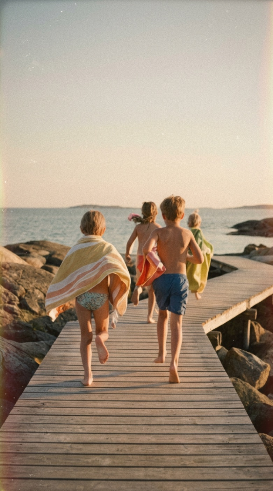
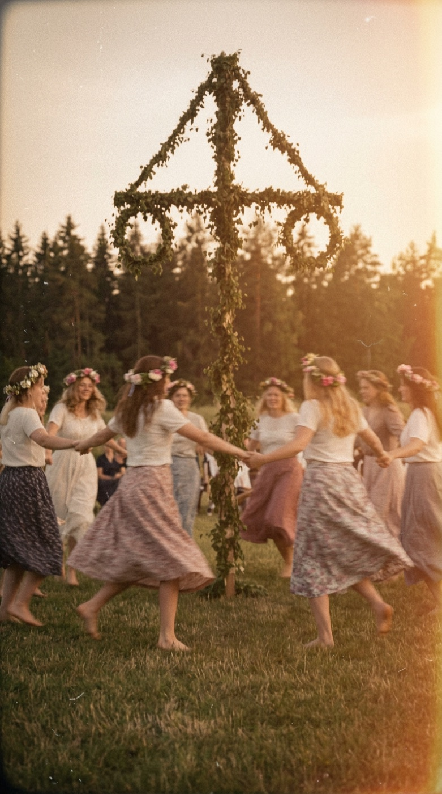
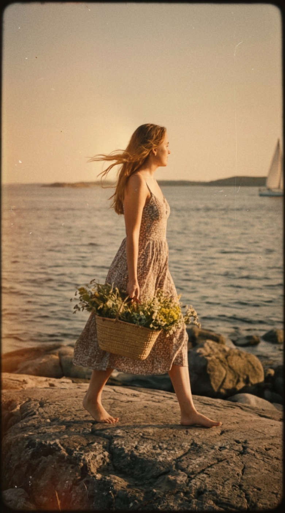
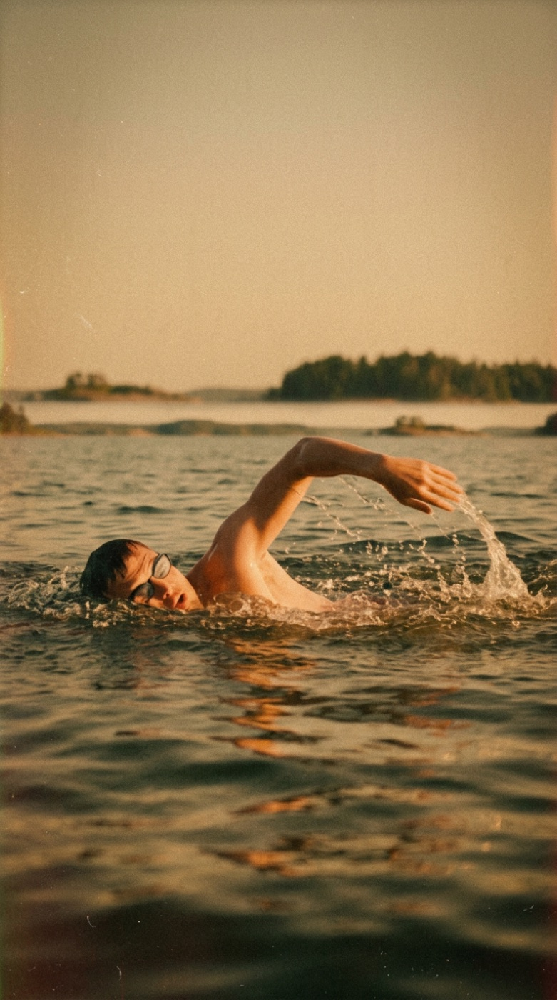
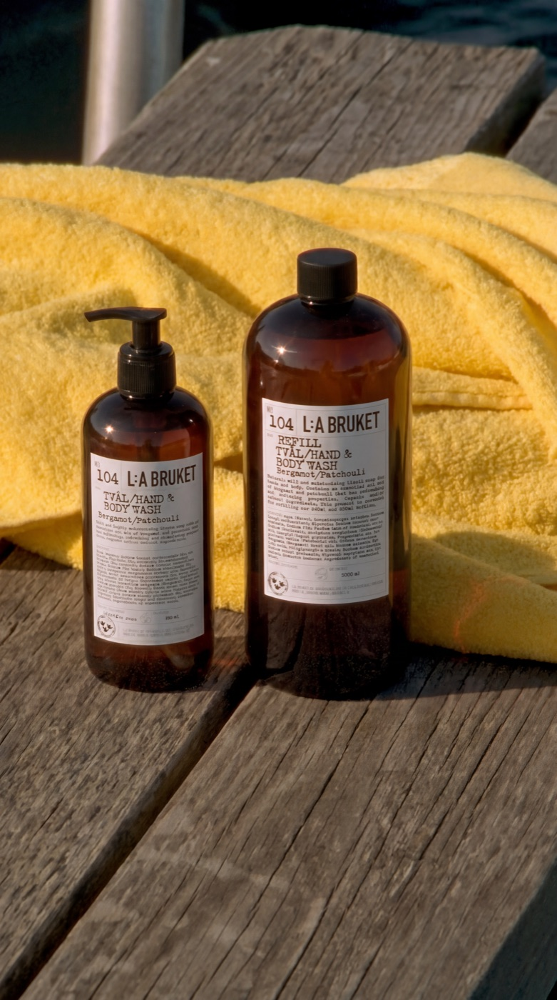
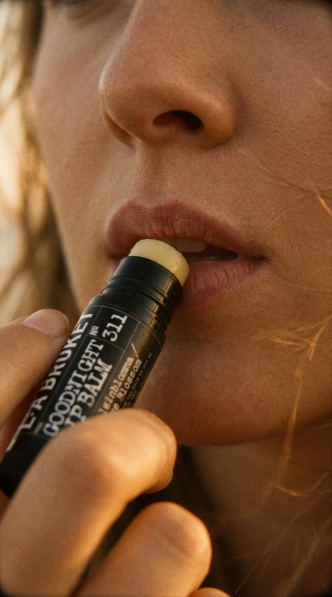

L:A Bruket — Summer
L:A Bruket SpeculativeA speculative summer campaign for L:A Bruket — the Swedish skincare house born on the west-coast archipelago. We translated the brand's calm, salt-air ritual into a series of sun-soaked film moments: midsummer dances, cold-water swims, and golden-hour walks along the rocks.
Shot entirely with AI in a vintage 35mm aesthetic, the campaign explores dozens of directions — product, lifestyle and place — at a speed and cost a traditional location shoot could never match, while keeping the warm, nostalgic grade that defines the brand.
Credits
Client
L:A Bruket (Speculative)
Direction & Creative
F.Sonny Productions
AI Generation
F.Sonny Productions
Edit & Post-Production
F.Sonny Productions
Sound Design
Name / Studio






Next project
Revolut — Around the World